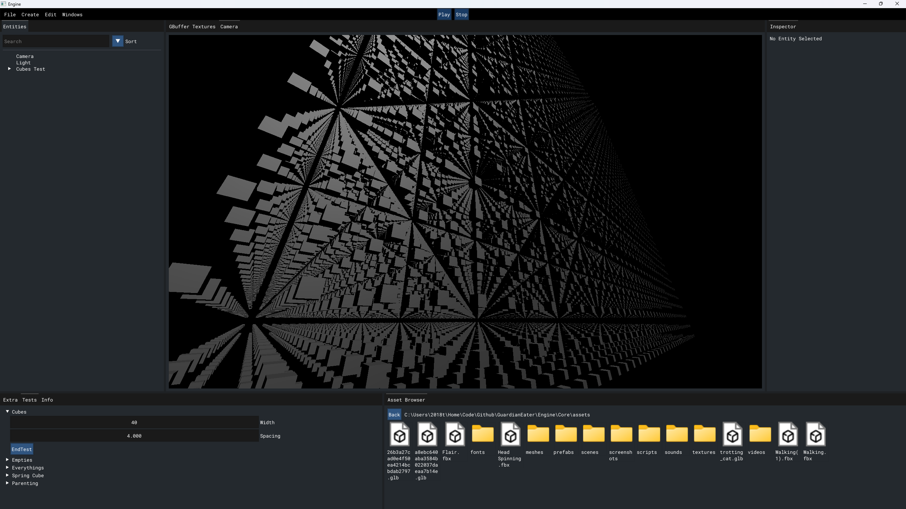

Archetypes

Geppetto Engine Main
This is a personal project of mine that is meant to be a playground where I can implement anything I think sounds cool. It's designed to be highly modular, so a new system or new component can be registered and start running with a single line of code. Many features get generated through reflection, such as UI and serialization.